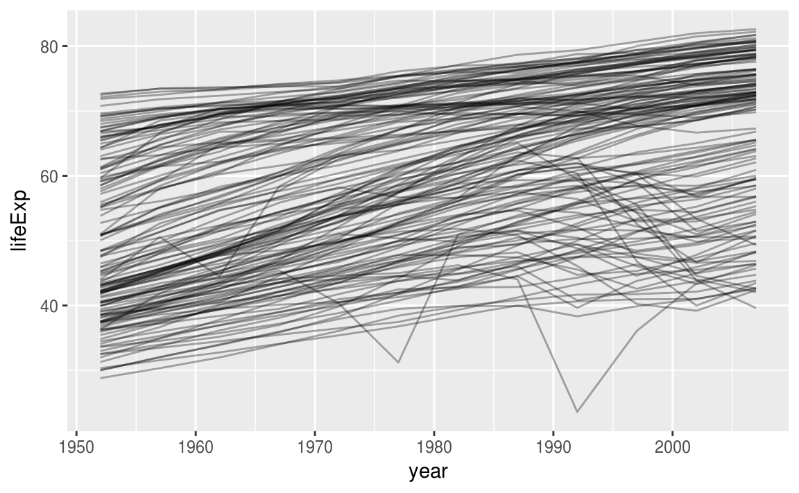
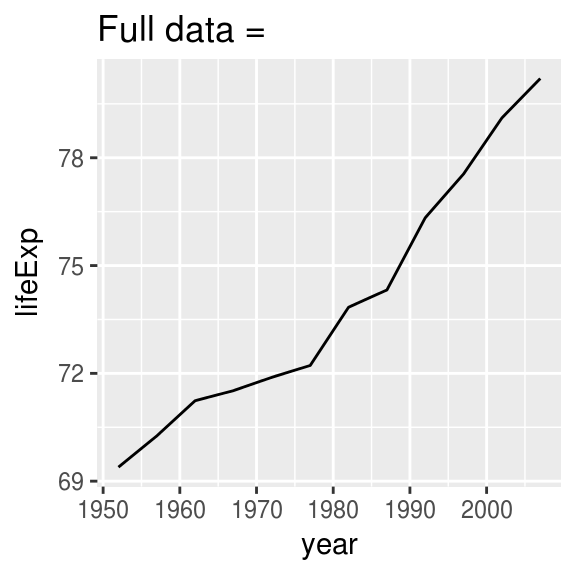
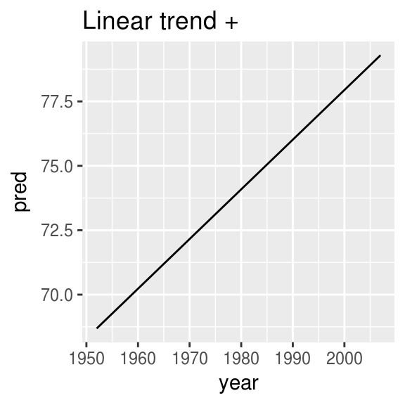
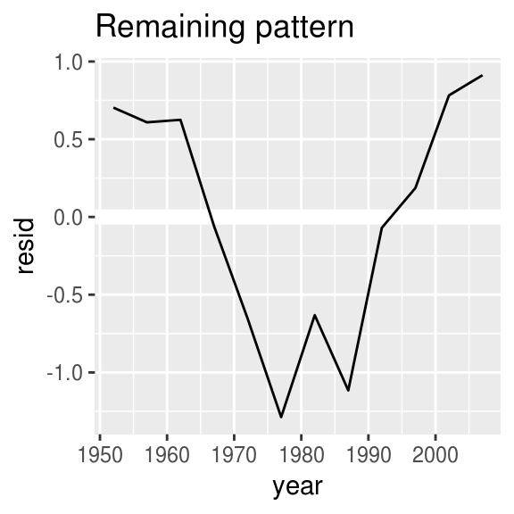
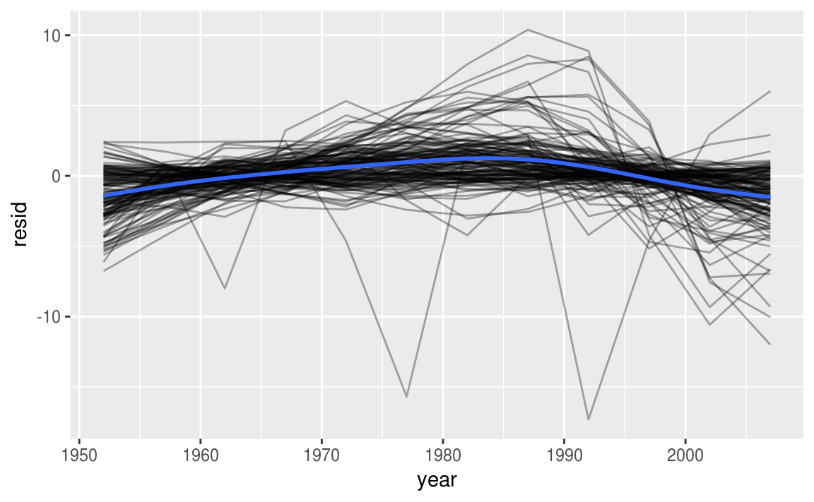
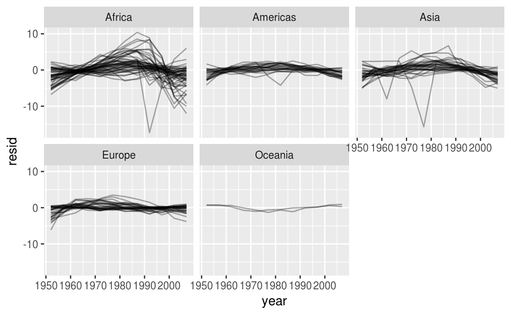
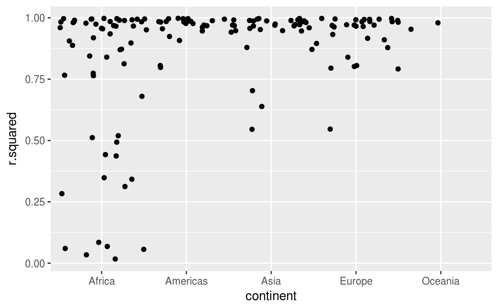
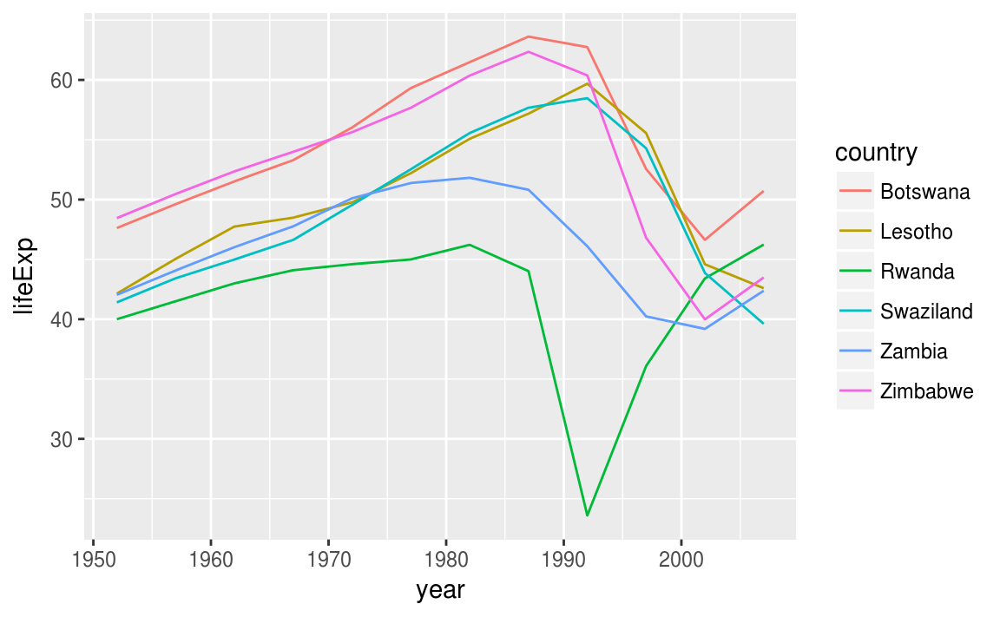

25 Many models
25.1 Introduction
In this chapter you’re going to learn three powerful ideas that help you to work with large numbers of models with ease:
Using many simple models to better understand complex datasets.
Using list-columns to store arbitrary data structures in a data frame. For example, this will allow you to have a column that contains linear models.
Using the broom package, by David Robinson, to turn models into tidy data. This is a powerful technique for working with large numbers of models because once you have tidy data, you can apply all of the techniques that you’ve learned about earlier in the book.
We’ll start by diving into a motivating example using data about life expectancy around the world. It’s a small dataset but it illustrates how important modelling can be for improving your visualisations. We’ll use a large number of simple models to partition out some of the strongest signal so we can see the subtler signals that remain. We’ll also see how model summaries can help us pick out outliers and unusual trends.
The following sections will dive into more detail about the individual techniques:
In list-columns, you’ll learn more about the list-column data structure, and why it’s valid to put lists in data frames.
In creating list-columns, you’ll learn the three main ways in which you’ll create list-columns.
In simplifying list-columns you’ll learn how to convert list-columns back to regular atomic vectors (or sets of atomic vectors) so you can work with them more easily.
In making tidy data with broom, you’ll learn about the full set of tools provided by broom, and see how they can be applied to other types of data structure.
This chapter is somewhat aspirational: if this book is your first introduction to R, this chapter is likely to be a struggle. It requires you have to deeply internalised ideas about modelling, data structures, and iteration. So don’t worry if you don’t get it — just put this chapter aside for a few months, and come back when you want to stretch your brain.
25.1.1 Prerequisites
Working with many models requires many of the packages of the tidyverse (for data exploration, wrangling, and programming) and modelr to facilitate modelling.
library(modelr)
library(tidyverse)25.2 gapminder
To motivate the power of many simple models, we’re going to look into the “gapminder” data. This data was popularised by Hans Rosling, a Swedish doctor and statistician. If you’ve never heard of him, stop reading this chapter right now and go watch one of his videos! He is a fantastic data presenter and illustrates how you can use data to present a compelling story. A good place to start is this short video filmed in conjunction with the BBC: https://www.youtube.com/watch?v=jbkSRLYSojo.
The gapminder data summarises the progression of countries over time, looking at statistics like life expectancy and GDP. The data is easy to access in R, thanks to Jenny Bryan who created the gapminder package:
library(gapminder)
gapminder
#> # A tibble: 1,704 × 6
#> country continent year lifeExp pop gdpPercap
#> <fctr> <fctr> <int> <dbl> <int> <dbl>
#> 1 Afghanistan Asia 1952 28.8 8425333 779
#> 2 Afghanistan Asia 1957 30.3 9240934 821
#> 3 Afghanistan Asia 1962 32.0 10267083 853
#> 4 Afghanistan Asia 1967 34.0 11537966 836
#> 5 Afghanistan Asia 1972 36.1 13079460 740
#> 6 Afghanistan Asia 1977 38.4 14880372 786
#> # ... with 1,698 more rowsIn this case study, we’re going to focus on just three variables to answer the question “How does life expectancy (lifeExp) change over time (year) for each country (country)?”. A good place to start is with a plot:
gapminder %>%
ggplot(aes(year, lifeExp, group = country)) +
geom_line(alpha = 1/3)
This is a small dataset: it only has ~1,700 observations and 3 variables. But it’s still hard to see what’s going on! Overall, it looks like life expectancy has been steadily improving. However, if you look closely, you might notice some countries that don’t follow this pattern. How can we make those countries easier to see?
One way is to use the same approach as in the last chapter: there’s a strong signal (overall linear growth) that makes it hard to see subtler trends. We’ll tease these factors apart by fitting a model with a linear trend. The model captures steady growth over time, and the residuals will show what’s left.
You already know how to do that if we had a single country:
nz <- filter(gapminder, country == "New Zealand")
nz %>%
ggplot(aes(year, lifeExp)) +
geom_line() +
ggtitle("Full data = ")
nz_mod <- lm(lifeExp ~ year, data = nz)
nz %>%
add_predictions(nz_mod) %>%
ggplot(aes(year, pred)) +
geom_line() +
ggtitle("Linear trend + ")
nz %>%
add_residuals(nz_mod) %>%
ggplot(aes(year, resid)) +
geom_hline(yintercept = 0, colour = "white", size = 3) +
geom_line() +
ggtitle("Remaining pattern")
How can we easily fit that model to every country?
25.2.1 Nested data
You could imagine copy and pasting that code multiple times; but you’ve already learned a better way! Extract out the common code with a function and repeat using a map function from purrr. This problem is structured a little differently to what you’ve seen before. Instead of repeating an action for each variable, we want to repeat an action for each country, a subset of rows. To do that, we need a new data structure: the nested data frame. To create a nested data frame we start with a grouped data frame, and “nest” it:
by_country <- gapminder %>%
group_by(country, continent) %>%
nest()
by_country
#> # A tibble: 142 × 3
#> country continent data
#> <fctr> <fctr> <list>
#> 1 Afghanistan Asia <tibble [12 × 4]>
#> 2 Albania Europe <tibble [12 × 4]>
#> 3 Algeria Africa <tibble [12 × 4]>
#> 4 Angola Africa <tibble [12 × 4]>
#> 5 Argentina Americas <tibble [12 × 4]>
#> 6 Australia Oceania <tibble [12 × 4]>
#> # ... with 136 more rows(I’m cheating a little by grouping on both continent and country. Given country, continent is fixed, so this doesn’t add any more groups, but it’s an easy way to carry an extra variable along for the ride.)
This creates an data frame that has one row per group (per country), and a rather unusual column: data. data is a list of data frames (or tibbles, to be precise). This seems like a crazy idea: we have a data frame with a column that is a list of other data frames! I’ll explain shortly why I think this is a good idea.
The data column is a little tricky to look at because it’s a moderately complicated list, and we’re still working on good tools to explore these objects. Unfortunately using str() is not recommended as it will often produce very long output. But if you pluck out a single element from the data column you’ll see that it contains all the data for that country (in this case, Afghanistan).
by_country$data[[1]]
#> # A tibble: 12 × 4
#> year lifeExp pop gdpPercap
#> <int> <dbl> <int> <dbl>
#> 1 1952 28.8 8425333 779
#> 2 1957 30.3 9240934 821
#> 3 1962 32.0 10267083 853
#> 4 1967 34.0 11537966 836
#> 5 1972 36.1 13079460 740
#> 6 1977 38.4 14880372 786
#> # ... with 6 more rowsNote the difference between a standard grouped data frame and a nested data frame: in a grouped data frame, each row is an observation; in a nested data frame, each row is a group. Another way to think about a nested dataset is we now have a meta-observation: a row that represents the complete time course for a country, rather than a single point in time.
25.2.2 List-columns
Now that we have our nested data frame, we’re in a good position to fit some models. We have a model-fitting function:
country_model <- function(df) {
lm(lifeExp ~ year, data = df)
}And we want to apply it to every data frame. The data frames are in a list, so we can use purrr::map() to apply country_model to each element:
models <- map(by_country$data, country_model)However, rather than leaving the list of models as a free-floating object, I think it’s better to store it as a column in the by_country data frame. Storing related objects in columns is a key part of the value of data frames, and why I think list-columns are such a good idea. In the course of working with these countries, we are going to have lots of lists where we have one element per country. So why not store them all together in one data frame?
In other words, instead of creating a new object in the global environment, we’re going to create a new variable in the by_country data frame. That’s a job for dplyr::mutate():
by_country <- by_country %>%
mutate(model = map(data, country_model))
by_country
#> # A tibble: 142 × 4
#> country continent data model
#> <fctr> <fctr> <list> <list>
#> 1 Afghanistan Asia <tibble [12 × 4]> <S3: lm>
#> 2 Albania Europe <tibble [12 × 4]> <S3: lm>
#> 3 Algeria Africa <tibble [12 × 4]> <S3: lm>
#> 4 Angola Africa <tibble [12 × 4]> <S3: lm>
#> 5 Argentina Americas <tibble [12 × 4]> <S3: lm>
#> 6 Australia Oceania <tibble [12 × 4]> <S3: lm>
#> # ... with 136 more rowsThis has a big advantage: because all the related objects are stored together, you don’t need to manually keep them in sync when you filter or arrange. The semantics of the data frame takes care of that for you:
by_country %>%
filter(continent == "Europe")
#> # A tibble: 30 × 4
#> country continent data model
#> <fctr> <fctr> <list> <list>
#> 1 Albania Europe <tibble [12 × 4]> <S3: lm>
#> 2 Austria Europe <tibble [12 × 4]> <S3: lm>
#> 3 Belgium Europe <tibble [12 × 4]> <S3: lm>
#> 4 Bosnia and Herzegovina Europe <tibble [12 × 4]> <S3: lm>
#> 5 Bulgaria Europe <tibble [12 × 4]> <S3: lm>
#> 6 Croatia Europe <tibble [12 × 4]> <S3: lm>
#> # ... with 24 more rows
by_country %>%
arrange(continent, country)
#> # A tibble: 142 × 4
#> country continent data model
#> <fctr> <fctr> <list> <list>
#> 1 Algeria Africa <tibble [12 × 4]> <S3: lm>
#> 2 Angola Africa <tibble [12 × 4]> <S3: lm>
#> 3 Benin Africa <tibble [12 × 4]> <S3: lm>
#> 4 Botswana Africa <tibble [12 × 4]> <S3: lm>
#> 5 Burkina Faso Africa <tibble [12 × 4]> <S3: lm>
#> 6 Burundi Africa <tibble [12 × 4]> <S3: lm>
#> # ... with 136 more rowsIf your list of data frames and list of models were separate objects, you have to remember that whenever you re-order or subset one vector, you need to re-order or subset all the others in order to keep them in sync. If you forget, your code will continue to work, but it will give the wrong answer!
25.2.3 Unnesting
Previously we computed the residuals of a single model with a single dataset. Now we have 142 data frames and 142 models. To compute the residuals, we need to call add_residuals() with each model-data pair:
by_country <- by_country %>%
mutate(
resids = map2(data, model, add_residuals)
)
by_country
#> # A tibble: 142 × 5
#> country continent data model resids
#> <fctr> <fctr> <list> <list> <list>
#> 1 Afghanistan Asia <tibble [12 × 4]> <S3: lm> <tibble [12 × 5]>
#> 2 Albania Europe <tibble [12 × 4]> <S3: lm> <tibble [12 × 5]>
#> 3 Algeria Africa <tibble [12 × 4]> <S3: lm> <tibble [12 × 5]>
#> 4 Angola Africa <tibble [12 × 4]> <S3: lm> <tibble [12 × 5]>
#> 5 Argentina Americas <tibble [12 × 4]> <S3: lm> <tibble [12 × 5]>
#> 6 Australia Oceania <tibble [12 × 4]> <S3: lm> <tibble [12 × 5]>
#> # ... with 136 more rowsBut how you can plot a list of data frames? Instead of struggling to answer that question, let’s turn the list of data frames back into a regular data frame. Previously we used nest() to turn a regular data frame into an nested data frame, and now we do the opposite with unnest():
resids <- unnest(by_country, resids)
resids
#> # A tibble: 1,704 × 7
#> country continent year lifeExp pop gdpPercap resid
#> <fctr> <fctr> <int> <dbl> <int> <dbl> <dbl>
#> 1 Afghanistan Asia 1952 28.8 8425333 779 -1.1063
#> 2 Afghanistan Asia 1957 30.3 9240934 821 -0.9519
#> 3 Afghanistan Asia 1962 32.0 10267083 853 -0.6636
#> 4 Afghanistan Asia 1967 34.0 11537966 836 -0.0172
#> 5 Afghanistan Asia 1972 36.1 13079460 740 0.6741
#> 6 Afghanistan Asia 1977 38.4 14880372 786 1.6475
#> # ... with 1,698 more rowsNote that each regular column is repeated one for each row in the nested column.
Now we have regular data frame, we can plot the residuals:
resids %>%
ggplot(aes(year, resid)) +
geom_line(aes(group = country), alpha = 1 / 3) +
geom_smooth(se = FALSE)
#> `geom_smooth()` using method = 'gam'
Facetting by continent is particularly revealing:
resids %>%
ggplot(aes(year, resid, group = country)) +
geom_line(alpha = 1 / 3) +
facet_wrap(~continent)
It looks like we’ve missed some mild patterns. There’s also something interesting going on in Africa: we see some very large residuals which suggests our model isn’t fitting so well there. We’ll explore that more in the next section, attacking it from a slightly different angle.
25.2.4 Model quality
Instead of looking at the residuals from the model, we could look at some general measurements of model quality. You learned how to compute some specific measures in the previous chapter. Here we’ll show a different approach using the broom package. The broom package provides a general set of functions to turn models into tidy data. Here we’ll use broom::glance() to extract some model quality metrics. If we apply it to a model, we get a data frame with a single row:
broom::glance(nz_mod)
#> r.squared adj.r.squared sigma statistic p.value df logLik AIC BIC
#> 1 0.954 0.949 0.804 205 5.41e-08 2 -13.3 32.6 34.1
#> deviance df.residual
#> 1 6.47 10We can use mutate() and unnest() to create a data frame with a row for each country:
by_country %>%
mutate(glance = map(model, broom::glance)) %>%
unnest(glance)
#> # A tibble: 142 × 16
#> country continent data model resids
#> <fctr> <fctr> <list> <list> <list>
#> 1 Afghanistan Asia <tibble [12 × 4]> <S3: lm> <tibble [12 × 5]>
#> 2 Albania Europe <tibble [12 × 4]> <S3: lm> <tibble [12 × 5]>
#> 3 Algeria Africa <tibble [12 × 4]> <S3: lm> <tibble [12 × 5]>
#> 4 Angola Africa <tibble [12 × 4]> <S3: lm> <tibble [12 × 5]>
#> 5 Argentina Americas <tibble [12 × 4]> <S3: lm> <tibble [12 × 5]>
#> 6 Australia Oceania <tibble [12 × 4]> <S3: lm> <tibble [12 × 5]>
#> # ... with 136 more rows, and 11 more variables: r.squared <dbl>,
#> # adj.r.squared <dbl>, sigma <dbl>, statistic <dbl>, p.value <dbl>,
#> # df <int>, logLik <dbl>, AIC <dbl>, BIC <dbl>, deviance <dbl>,
#> # df.residual <int>This isn’t quite the output we want, because it still includes all the list columns. This is default behaviour when unnest() works on single row data frames. To suppress these columns we use .drop = TRUE:
glance <- by_country %>%
mutate(glance = map(model, broom::glance)) %>%
unnest(glance, .drop = TRUE)
glance
#> # A tibble: 142 × 13
#> country continent r.squared adj.r.squared sigma statistic p.value
#> <fctr> <fctr> <dbl> <dbl> <dbl> <dbl> <dbl>
#> 1 Afghanistan Asia 0.948 0.942 1.223 181.2 9.84e-08
#> 2 Albania Europe 0.911 0.902 1.983 101.8 1.46e-06
#> 3 Algeria Africa 0.985 0.984 1.323 661.9 1.81e-10
#> 4 Angola Africa 0.888 0.877 1.407 79.1 4.59e-06
#> 5 Argentina Americas 0.996 0.995 0.292 2246.4 4.22e-13
#> 6 Australia Oceania 0.980 0.978 0.621 481.3 8.67e-10
#> # ... with 136 more rows, and 6 more variables: df <int>, logLik <dbl>,
#> # AIC <dbl>, BIC <dbl>, deviance <dbl>, df.residual <int>(Pay attention to the variables that aren’t printed: there’s a lot of useful stuff there.)
With this data frame in hand, we can start to look for models that don’t fit well:
glance %>%
arrange(r.squared)
#> # A tibble: 142 × 13
#> country continent r.squared adj.r.squared sigma statistic p.value
#> <fctr> <fctr> <dbl> <dbl> <dbl> <dbl> <dbl>
#> 1 Rwanda Africa 0.0172 -0.08112 6.56 0.175 0.685
#> 2 Botswana Africa 0.0340 -0.06257 6.11 0.352 0.566
#> 3 Zimbabwe Africa 0.0562 -0.03814 7.21 0.596 0.458
#> 4 Zambia Africa 0.0598 -0.03418 4.53 0.636 0.444
#> 5 Swaziland Africa 0.0682 -0.02497 6.64 0.732 0.412
#> 6 Lesotho Africa 0.0849 -0.00666 5.93 0.927 0.358
#> # ... with 136 more rows, and 6 more variables: df <int>, logLik <dbl>,
#> # AIC <dbl>, BIC <dbl>, deviance <dbl>, df.residual <int>The worst models all appear to be in Africa. Let’s double check that with a plot. Here we have a relatively small number of observations and a discrete variable, so geom_jitter() is effective:
glance %>%
ggplot(aes(continent, r.squared)) +
geom_jitter(width = 0.5)
We could pull out the countries with particularly bad \(R^2\) and plot the data:
bad_fit <- filter(glance, r.squared < 0.25)
gapminder %>%
semi_join(bad_fit, by = "country") %>%
ggplot(aes(year, lifeExp, colour = country)) +
geom_line()
We see two main effects here: the tragedies of the HIV/AIDS epidemic and the Rwandan genocide.
25.2.5 Exercises
A linear trend seems to be slightly too simple for the overall trend. Can you do better with a quadratic polynomial? How can you interpret the coefficients of the quadratic? (Hint you might want to transform
yearso that it has mean zero.)Explore other methods for visualising the distribution of \(R^2\) per continent. You might want to try the ggbeeswarm package, which provides similar methods for avoiding overlaps as jitter, but uses deterministic methods.
To create the last plot (showing the data for the countries with the worst model fits), we needed two steps: we created a data frame with one row per country and then semi-joined it to the original dataset. It’s possible avoid this join if we use
unnest()instead ofunnest(.drop = TRUE). How?
25.3 List-columns
Now that you’ve seen a basic workflow for managing many models, let’s dive back into some of the details. In this section, we’ll explore the list-column data structure in a little more detail. It’s only recently that I’ve really appreciated the idea of the list-column. List-columns are implicit in the definition of the data frame: a data frame is a named list of equal length vectors. A list is a vector, so it’s always been legitimate to use a list as a column of a data frame. However, base R doesn’t make it easy to create list-columns, and data.frame() treats a list as a list of columns:.
data.frame(x = list(1:3, 3:5))
#> x.1.3 x.3.5
#> 1 1 3
#> 2 2 4
#> 3 3 5You can prevent data.frame() from doing this with I(), but the result doesn’t print particularly well:
data.frame(
x = I(list(1:3, 3:5)),
y = c("1, 2", "3, 4, 5")
)
#> x y
#> 1 1, 2, 3 1, 2
#> 2 3, 4, 5 3, 4, 5Tibble alleviates this problem by being lazier (tibble() doesn’t modify its inputs) and by providing a better print method:
tibble(
x = list(1:3, 3:5),
y = c("1, 2", "3, 4, 5")
)
#> # A tibble: 2 × 2
#> x y
#> <list> <chr>
#> 1 <int [3]> 1, 2
#> 2 <int [3]> 3, 4, 5It’s even easier with tribble() as it can automatically work out that you need a list:
tribble(
~x, ~y,
1:3, "1, 2",
3:5, "3, 4, 5"
)
#> # A tibble: 2 × 2
#> x y
#> <list> <chr>
#> 1 <int [3]> 1, 2
#> 2 <int [3]> 3, 4, 5List-columns are often most useful as intermediate data structure. They’re hard to work with directly, because most R functions work with atomic vectors or data frames, but the advantage of keeping related items together in a data frame is worth a little hassle.
Generally there are three parts of an effective list-column pipeline:
You create the list-column using one of
nest(),summarise()+list(), ormutate()+ a map function, as described in Creating list-columns.You create other intermediate list-columns by transforming existing list columns with
map(),map2()orpmap(). For example, in the case study above, we created a list-column of models by transforming a list-column of data frames.You simplify the list-column back down to a data frame or atomic vector, as described in Simplifying list-columns.
25.4 Creating list-columns
Typically, you won’t create list-columns with tibble(). Instead, you’ll create them from regular columns, using one of three methods:
With
tidyr::nest()to convert a grouped data frame into a nested data frame where you have list-column of data frames.With
mutate()and vectorised functions that return a list.With
summarise()and summary functions that return multiple results.
Alternatively, you might create them from a named list, using tibble::enframe().
Generally, when creating list-columns, you should make sure they’re homogeneous: each element should contain the same type of thing. There are no checks to make sure this is true, but if you use purrr and remember what you’ve learned about type-stable functions, you should find it happens naturally.
25.4.1 With nesting
nest() creates a nested data frame, which is a data frame with a list-column of data frames. In a nested data frame each row is a meta-observation: the other columns give variables that define the observation (like country and continent above), and the list-column of data frames gives the individual observations that make up the meta-observation.
There are two ways to use nest(). So far you’ve seen how to use it with a grouped data frame. When applied to a grouped data frame, nest() keeps the grouping columns as is, and bundles everything else into the list-column:
gapminder %>%
group_by(country, continent) %>%
nest()
#> # A tibble: 142 × 3
#> country continent data
#> <fctr> <fctr> <list>
#> 1 Afghanistan Asia <tibble [12 × 4]>
#> 2 Albania Europe <tibble [12 × 4]>
#> 3 Algeria Africa <tibble [12 × 4]>
#> 4 Angola Africa <tibble [12 × 4]>
#> 5 Argentina Americas <tibble [12 × 4]>
#> 6 Australia Oceania <tibble [12 × 4]>
#> # ... with 136 more rowsYou can also use it on an ungrouped data frame, specifying which columns you want to nest:
gapminder %>%
nest(year:gdpPercap)
#> # A tibble: 142 × 3
#> country continent data
#> <fctr> <fctr> <list>
#> 1 Afghanistan Asia <tibble [12 × 4]>
#> 2 Albania Europe <tibble [12 × 4]>
#> 3 Algeria Africa <tibble [12 × 4]>
#> 4 Angola Africa <tibble [12 × 4]>
#> 5 Argentina Americas <tibble [12 × 4]>
#> 6 Australia Oceania <tibble [12 × 4]>
#> # ... with 136 more rows25.4.2 From vectorised functions
Some useful functions take an atomic vector and return a list. For example, in strings you learned about stringr::str_split() which takes a character vector and returns a list of character vectors. If you use that inside mutate, you’ll get a list-column:
df <- tribble(
~x1,
"a,b,c",
"d,e,f,g"
)
df %>%
mutate(x2 = stringr::str_split(x1, ","))
#> # A tibble: 2 × 2
#> x1 x2
#> <chr> <list>
#> 1 a,b,c <chr [3]>
#> 2 d,e,f,g <chr [4]>unnest() knows how to handle these lists of vectors:
df %>%
mutate(x2 = stringr::str_split(x1, ",")) %>%
unnest()
#> # A tibble: 7 × 2
#> x1 x2
#> <chr> <chr>
#> 1 a,b,c a
#> 2 a,b,c b
#> 3 a,b,c c
#> 4 d,e,f,g d
#> 5 d,e,f,g e
#> 6 d,e,f,g f
#> # ... with 1 more rows(If you find yourself using this pattern a lot, make sure to check out tidyr:separate_rows() which is a wrapper around this common pattern).
Another example of this pattern is using the map(), map2(), pmap() from purrr. For example, we could take the final example from Invoking different functions and rewrite it to use mutate():
sim <- tribble(
~f, ~params,
"runif", list(min = -1, max = -1),
"rnorm", list(sd = 5),
"rpois", list(lambda = 10)
)
sim %>%
mutate(sims = invoke_map(f, params, n = 10))
#> # A tibble: 3 × 3
#> f params sims
#> <chr> <list> <list>
#> 1 runif <list [2]> <dbl [10]>
#> 2 rnorm <list [1]> <dbl [10]>
#> 3 rpois <list [1]> <int [10]>Note that technically sim isn’t homogeneous because it contains both double and integer vectors. However, this is unlikely to cause many problems since integers and doubles are both numeric vectors.
25.4.3 From multivalued summaries
One restriction of summarise() is that it only works with summary functions that return a single value. That means that you can’t use it with functions like quantile() that return a vector of arbitrary length:
mtcars %>%
group_by(cyl) %>%
summarise(q = quantile(mpg))
#> Error in summarise_impl(.data, dots): expecting a single valueYou can however, wrap the result in a list! This obeys the contract of summarise(), because each summary is now a list (a vector) of length 1.
mtcars %>%
group_by(cyl) %>%
summarise(q = list(quantile(mpg)))
#> # A tibble: 3 × 2
#> cyl q
#> <dbl> <list>
#> 1 4 <dbl [5]>
#> 2 6 <dbl [5]>
#> 3 8 <dbl [5]>To make useful results with unnest, you’ll also need to capture the probabilities:
probs <- c(0.01, 0.25, 0.5, 0.75, 0.99)
mtcars %>%
group_by(cyl) %>%
summarise(p = list(probs), q = list(quantile(mpg, probs))) %>%
unnest()
#> # A tibble: 15 × 3
#> cyl p q
#> <dbl> <dbl> <dbl>
#> 1 4 0.01 21.4
#> 2 4 0.25 22.8
#> 3 4 0.50 26.0
#> 4 4 0.75 30.4
#> 5 4 0.99 33.8
#> 6 6 0.01 17.8
#> # ... with 9 more rows25.4.4 From a named list
Data frames with list-columns provide a solution to a common problem: what do you do if you want to iterate over both the contents of a list and its elements? Instead of trying to jam everything into one object, it’s often easier to make a data frame: one column can contain the elements, and one column can contain the list. An easy way to create such a data frame from a list is tibble::enframe().
x <- list(
a = 1:5,
b = 3:4,
c = 5:6
)
df <- enframe(x)
df
#> # A tibble: 3 × 2
#> name value
#> <chr> <list>
#> 1 a <int [5]>
#> 2 b <int [2]>
#> 3 c <int [2]>The advantage of this structure is that it generalises in a straightforward way - names are useful if you have character vector of metadata, but don’t help if you have other types of data, or multiple vectors.
Now if you want to iterate over names and values in parallel, you can use map2():
df %>%
mutate(
smry = map2_chr(name, value, ~ stringr::str_c(.x, ": ", .y[1]))
)
#> # A tibble: 3 × 3
#> name value smry
#> <chr> <list> <chr>
#> 1 a <int [5]> a: 1
#> 2 b <int [2]> b: 3
#> 3 c <int [2]> c: 525.4.5 Exercises
List all the functions that you can think of that take a atomic vector and return a list.
Brainstorm useful summary functions that, like
quantile(), return multiple values.What’s missing in the following data frame? How does
quantile()return that missing piece? Why isn’t that helpful here?mtcars %>% group_by(cyl) %>% summarise(q = list(quantile(mpg))) %>% unnest() #> # A tibble: 15 × 2 #> cyl q #> <dbl> <dbl> #> 1 4 21.4 #> 2 4 22.8 #> 3 4 26.0 #> 4 4 30.4 #> 5 4 33.9 #> 6 6 17.8 #> # ... with 9 more rowsWhat does this code do? Why might might it be useful?
mtcars %>% group_by(cyl) %>% summarise_each(funs(list))
25.5 Simplifying list-columns
To apply the techniques of data manipulation and visualisation you’ve learned in this book, you’ll need to simplify the list-column back to a regular column (an atomic vector), or set of columns. The technique you’ll use to collapse back down to a simpler structure depends on whether you want a single value per element, or multiple values:
If you want a single value, use
mutate()withmap_lgl(),map_int(),map_dbl(), andmap_chr()to create an atomic vector.If you want many values, use
unnest()to convert list-columns back to regular columns, repeating the rows as many times as necessary.
These are described in more detail below.
25.5.1 List to vector
If you can reduce your list column to an atomic vector then it will be a regular column. For example, you can always summarise an object with its type and length, so this code will work regardless of what sort of list-column you have:
df <- tribble(
~x,
letters[1:5],
1:3,
runif(5)
)
df %>% mutate(
type = map_chr(x, typeof),
length = map_int(x, length)
)
#> # A tibble: 3 × 3
#> x type length
#> <list> <chr> <int>
#> 1 <chr [5]> character 5
#> 2 <int [3]> integer 3
#> 3 <dbl [5]> double 5This is the same basic information that you get from the default tbl print method, but now you can use it for filtering. This is a useful technique if you have a heterogeneous list, and want to filter out the parts aren’t working for you.
Don’t forget about the map_*() shortcuts - you can use map_chr(x, "apple") to extract the string stored in apple for each element of x. This is useful for pulling apart nested lists into regular columns. Use the .null argument to provide a value to use if the element is missing (instead of returning NULL):
df <- tribble(
~x,
list(a = 1, b = 2),
list(a = 2, c = 4)
)
df %>% mutate(
a = map_dbl(x, "a"),
b = map_dbl(x, "b", .null = NA_real_)
)
#> # A tibble: 2 × 3
#> x a b
#> <list> <dbl> <dbl>
#> 1 <list [2]> 1 2
#> 2 <list [2]> 2 NA25.5.2 Unnesting
unnest() works by repeating the regular columns once for each element of the list-column. For example, in the following very simple example we repeat the first row 4 times (because there the first element of y has length four), and the second row once:
tibble(x = 1:2, y = list(1:4, 1)) %>% unnest(y)
#> # A tibble: 5 × 2
#> x y
#> <int> <dbl>
#> 1 1 1
#> 2 1 2
#> 3 1 3
#> 4 1 4
#> 5 2 1This means that you can’t simultaneously unnest two columns that contain different number of elements:
# Ok, because y and z have the same number of elements in
# every row
df1 <- tribble(
~x, ~y, ~z,
1, c("a", "b"), 1:2,
2, "c", 3
)
df1
#> # A tibble: 2 × 3
#> x y z
#> <dbl> <list> <list>
#> 1 1 <chr [2]> <int [2]>
#> 2 2 <chr [1]> <dbl [1]>
df1 %>% unnest(y, z)
#> # A tibble: 3 × 3
#> x y z
#> <dbl> <chr> <dbl>
#> 1 1 a 1
#> 2 1 b 2
#> 3 2 c 3
# Doesn't work because y and z have different number of elements
df2 <- tribble(
~x, ~y, ~z,
1, "a", 1:2,
2, c("b", "c"), 3
)
df2
#> # A tibble: 2 × 3
#> x y z
#> <dbl> <list> <list>
#> 1 1 <chr [1]> <int [2]>
#> 2 2 <chr [2]> <dbl [1]>
df2 %>% unnest(y, z)
#> Error: All nested columns must have the same number of elements.The same principle applies when unnesting list-columns of data frames. You can unnest multiple list-cols as long as all the data frames in each row have the same number of rows.
25.5.3 Exercises
Why might the
lengths()function be useful for creating atomic vector columns from list-columns?List the most common types of vector found in a data frame. What makes lists different?
25.6 Making tidy data with broom
The broom package provides three general tools for turning models into tidy data frames:
broom::glance(model)returns a row for each model. Each column gives a model summary: either a measure of model quality, or complexity, or a combination of the two.broom::tidy(model)returns a row for each coefficient in the model. Each column gives information about the estimate or its variability.broom::augment(model, data)returns a row for each row indata, adding extra values like residuals, and influence statistics.